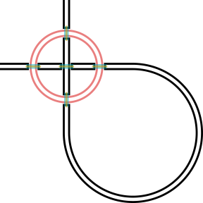
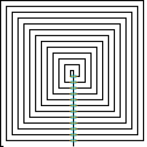

Paths
A Paths.Path is an ordered collection of Paths.Nodes, each of which has a Paths.Segment and a Paths.Style. The nodes are linked to each other, so each node knows what the previous and next nodes are.
Because Path is a subtype of GeometryStructure, paths can be used with the transformation interface as well as the structure interface including bounds and other operations.
See API Reference: Paths.
Segments
Segments describe the curve a Paths.Node follows. For example, Paths.Straight or Paths.Turn are used frequently. In general, each subtype of Segment can represent a class of parametric functions t->Point(x(t),y(t)).
This package assumes that the parametric functions are implemented such that $\sqrt{((dx/dt)^2 + (dy/dt)^2)} = 1$. In other words, the functions are parameterized by arclength t ranging from zero to the path length of the segment.
Instances of these subtypes of Segment specify a particular path in the plane. Instances of Turn, for example, will capture an initial and final angle, a radius, and an origin. All circular turns may be parameterized with these variables.
Another useful Segment subtype is Paths.BSpline, which interpolates between two or more points with specified start and end tangents (and curvature, optionally) using a cubic B-spline. These have the property that curvature is continuous along the spline, and can be automatically optimized further to avoid sharp changes in curvature.
See API Reference: Path Segments.
Styles
Each subtype of Style describes how to render a segment. They define a one-dimensional cross-section that is swept along the Segment and that can vary with arclength along the segment. You can create the most common styles using the constructors Paths.Trace (a trace with some width) and Paths.CPW (a coplanar waveguide style).
One can implement new styles by writing rendering methods (for GDSII, that would be to_polygons) that dispatch on different pairs of segment and style types. In this way, the rendering code can be specialized for the task at hand, improving performance and shrinking generated file sizes (ideally).
See API Reference: Path Styles.
Tapers
As a convenience, this package provides functions for the automatic tapering of both Paths.Trace and Paths.CPW via the Paths.Taper constructor. Alternatively, one can specify the tapers concretely by calling their respective constructors.
The following example illustrates the use of automatic tapering. First, we construct a taper with two different traces surrounding it:
using DeviceLayout, DeviceLayout.PreferredUnits, FileIO
p = Path(μm)
straight!(p, 10μm, Paths.Trace(2.0μm))
straight!(p, 10μm, Paths.Taper())
straight!(p, 10μm, Paths.Trace(4.0μm))The taper is automatically chosen to be a Paths.Trace, with appropriate initial (2.0 μm) and final (4.0 μm) widths. The next segment shows that we can even automatically taper between the current Paths.Trace and a hard-coded taper (of concrete type Paths.TaperTrace), matching to the dimensions at the beginning of the latter taper.
straight!(p, 10μm, Paths.Taper())
straight!(p, 10μm, Paths.TaperTrace(2.0μm, 1.0μm))As a final example, Paths.Taper can also be used in turn! segments, and as a way to automatically transition from a Paths.Taper to a Paths.CPW, or vice-versa:
turn!(p, -π / 2, 10μm, Paths.Taper())
straight!(p, 10μm, Paths.Trace(2.0μm))
straight!(p, 10μm, Paths.Taper())
straight!(p, 10μm, Paths.CPW(2.0μm, 1.0μm))
c = Cell("tapers", nm)
render!(c, p, GDSMeta(0))Corners
Sharp turns in a path can be accomplished with Paths.corner!. Sharp turns pose a challenge to the path abstraction in that they have zero length, and when rendered effectively take up some length of the neighboring segments. Originally, the segment lengths were tweaked at render time to achieve the intended output. As other code began taking advantage of the path abstractions, the limitations of this approach became apparent.
Currently, corners are implemented such that the preceding Paths.Node is split using Paths.split near the corner when corner! is used, and a short resulting section near the corner has the style changed to Paths.SimpleNoRender. When this is followed by Paths.straight! to create the next segment, a similar operation is done, to ensure the corner is not twice-rendered. This change was necessary to be able to use Intersect.intersect! on paths with corners.
Attachments
attach! is one of the most useful functions defined in this package.
When you call attach!, you are defining a coordinate system local to somewhere along the target Path, saying that a StructureReference should be placed at the origin of that coordinate system (or slightly away from it if you want the cell to be one one side of the path or the other). The local coordinate system will rotate as the path changes orientations. The origin of the StructureReference corresponds how the referenced cell should be displaced with respect to the origin of the local coordinate system. This differs from the usual meaning of the origin of a StructureReference, which is how the referenced cell should be displaced with respect to the origin of a containing Cell.
The same StructureReference can be attached to multiple points along multiple paths. If the reference is modified (e.g. rotation, origin, magnification) before rendering to a Cell, the changes should be reflected at all attachment points. If the path is modified further before rendering, the attachment points will follow the path modifications, moving the origins of the local coordinate systems. The origin fields of the cell references do not change as the path is modified.
Attachments are implemented by introducing a Paths.DecoratedStyle, which is kind of a meta-Style: it remembers where to attach StructureReference, but how the path itself is actually drawn is deferred to a different Style object that it retains a reference to. One can repeat a DecoratedStyle with one attachment to achieve a periodic placement of StructureReference (like an ArrayReference, but along the path). Or, one long segment with a DecoratedStyle could have several attachments to achieve a similar effect.
When a Path is rendered to a Cell, it is turned into Polygons living in some Cell. The attachments become (or remain) CellReferences, now living inside of a Cell and not tied to an abstract path. The notion of local coordinate systems along the path no longer makes sense because the abstract path has been made concrete, and the polygons are living in the coordinate system of the containing cell. Each attachment to the former path now must have its origin referenced to the origin of the containing cell, not to local path coordinate systems. Additionally, the references may need to rotate according to how the path was locally oriented. As a result, even if the same CellReference was attached multiple times to a path, now we need distinct CellReference objects for each attachment, as well as for each time a corresponding DecoratedStyle is rendered.
Suppose we want the ability to transform between coordinate systems, especially between the coordinate system of a referenced cell and the coordinate system of a parent cell. At first glance it would seem like we could simply define a transform function, taking the parent cell and the cell reference we are interested in. But how would we actually identify the particular cell reference we want? Looking in the tree of references for an attached CellReference will not work: distinct CellReferences needed to be made after the path was rendered, and so the particular CellReference object initially attached is not actually in the Cell containing the rendered path.
To overcome this problem, we make searching for the appropriate CellReference easier. Suppose a path with attachments has been rendered to a Cell, which is bound to symbol aaa. A CellReference referring to a cell named "bbb" was attached twice. To recall the second attachment: aaa["bbb",2] (the index defaults to 1 if unspecified). We can go deeper if we want to refer to references inside that attachment: aaa["bbb",2]["ccc"]. In this manner, it is easy to find the right CellReference to use with transformation(::DeviceLayout.GeometryStructure, ::StructureReference).
Intersections
How to do the right thing when paths intersect is often tedious. Intersect.intersect! provides a useful function to modify existing paths automatically to account for intersections according to intersection styles (Intersect.IntersectStyle). Since this is done prior to rendering, further modification can be done easily. Both self-intersections and pairwise intersections can be handled for any reasonable number of paths.
For now, one intersection style is implemented, but the heavy-lifting to add more has been done already. Here's an example (consult the Intersection API reference for further information):
pa1 = Path(μm)
turn!(pa1, -360°, 100μm, Paths.CPW(10μm, 6μm))
pa2 = Path(Point(0, 100)μm, α0=-90°)
straight!(pa2, 400μm, Paths.CPW(10μm, 6μm))
turn!(pa2, 270°, 200μm)
straight!(pa2, 400μm)
intersect!(
Intersect.AirBridge(
scaffold_meta=GDSMeta(3, 0),
air_bridge_meta=GDSMeta(4, 0),
crossing_gap=2μm,
foot_gap=2μm,
foot_length=2μm,
extent_gap=2μm,
scaffold_gap=2μm
),
pa1,
pa2
)
c = Cell("test", nm)
render!(c, pa1, GDSMeta(0))
render!(c, pa2, GDSMeta(1))
save(
"intersect_circle.svg",
flatten(c);
layercolors=merge(DeviceLayout.Graphics.layercolors, Dict(1 => (0, 0, 0, 1)))
);
Here's another example:
pa = Path(μm, α0=90°)
straight!(pa, 130μm, Paths.Trace(2μm))
corner!(pa, 90°, Paths.SimpleTraceCorner())
let L = 5μm
for i = 1:50
straight!(pa, L)
corner!(pa, 90°, Paths.SimpleTraceCorner())
L += 5μm
end
end
straight!(pa, 5μm)
intersect!(
Intersect.AirBridge(
scaffold_meta=GDSMeta(3, 0),
air_bridge_meta=GDSMeta(4, 0),
crossing_gap=2μm,
foot_gap=2μm,
foot_length=2μm,
extent_gap=2μm,
scaffold_gap=2μm
),
pa
)
c = Cell("test", nm)
render!(c, pa, GDSMeta(1))
save(
"intersect_spiral.svg",
flatten(c);
layercolors=merge(DeviceLayout.Graphics.layercolors, Dict(1 => (0, 0, 0, 1)))
);